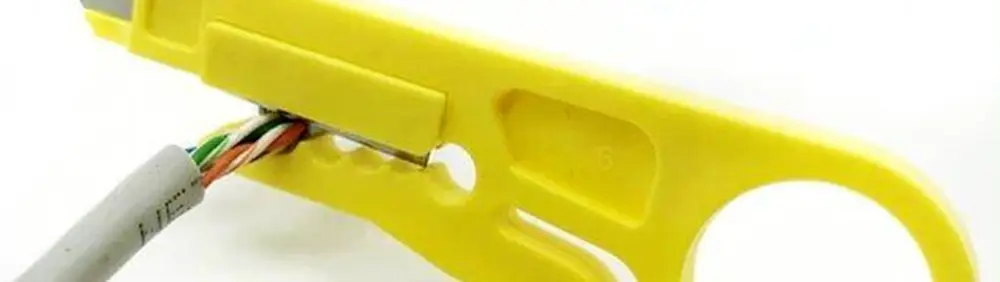

Cara Mengupas Kabel Kecil dengan Benar: Panduan Lengkap untuk DIY

Bagi para penggemar do it yourself (DIY) di bidang elektronik, akhir pekan adalah waktu emas untuk menyalurkan hobi. Merakit sirkuit, memodifikasi perangkat, atau sekadar memperbaiki alat elektronik yang rusak bisa menjadi kegiatan yang sangat menyenangkan. Dalam semua kegiatan tersebut, ada satu keahlian dasar yang wajib dikuasai: cara mengupas kabel.
Mengupas kabel diperlukan untuk banyak hal, mulai dari menyambungkan dua kabel, menghubungkan kabel ke komponen, hingga membuat prototipe di PCB lubang. Meski terdengar sepele, mengupas kabel dengan teknik yang salah bisa berisiko merusak komponen atau bahkan membahayakan.
Artikel ini akan memandu Anda cara mengupas kabel kecil dengan benar menggunakan alat yang tepat, murah, dan sangat mudah digunakan.
Mengapa Perlu Mengupas Kabel dengan Alat yang Tepat?
Mungkin Anda tergoda untuk menggunakan gunting atau pisau cutter. Namun, menggunakan alat yang tidak sesuai memiliki beberapa risiko:
- Merusak Serabut Tembaga: Pisau atau gunting bisa dengan mudah memotong beberapa helai serabut tembaga di dalam kabel. Hal ini akan mengurangi kemampuan kabel menghantarkan listrik, bisa menyebabkan panas berlebih, dan membuat sambungan menjadi rapuh.
- Risiko Terluka: Ujung pisau yang tajam bisa dengan mudah tergelincir dan melukai jari Anda.
- Hasil Tidak Rapi: Potongan yang tidak presisi akan membuat hasil kerja Anda terlihat kurang profesional.
Karena itulah, menggunakan alat pengupas kabel atau wire stripper sangat direkomendasikan untuk hasil yang rapi, cepat, dan aman.
Mengenal Alat Pengupas Kabel (Wire Stripper) Sederhana
Untuk proyek elektronik yang menggunakan kabel-kabel kecil, Anda tidak perlu alat yang mahal. Ada satu alat pengupas kabel sederhana yang sangat populer di kalangan penghobi.
- Bentuk: Mirip gunting kecil, biasanya berwarna kuning.
- Fitur: Memiliki beberapa lubang gerigi dengan ukuran berbeda untuk berbagai diameter kabel.
- Harga: Sangat terjangkau. Per Juli 2025, alat ini bisa ditemukan di berbagai marketplace online dengan harga di bawah Rp 5.000.
Ukurannya yang kecil membuatnya praktis untuk dimasukkan ke saku atau kotak peralatan Anda.
Langkah-langkah Mengupas Kabel Menggunakan Wire Stripper
Menggunakan alat ini sangatlah mudah. Ikuti langkah-langkah berikut:
-
Pilih Ukuran yang Tepat
Buka alat seperti membuka gunting, lalu masukkan ujung kabel ke salah satu lubang gerigi. Pilih lubang yang ukurannya paling pas dengan diameter kabel Anda. Lubang yang pas akan memotong lapisan isolasi (kulit kabel) tanpa melukai serabut tembaga di dalamnya. -
Jepit dan Putar
Setelah kabel berada di posisi yang tepat, jepit kabel dengan menutup alatnya. Kemudian, dengan jari telunjuk dimasukkan ke lubang gagang, putar alat mengelilingi kabel beberapa kali. Gerakan ini akan membuat pisau kecil di dalam gerigi memotong kulit kabel secara melingkar. -
Tarik Perlahan
Setelah kulit kabel terlihat terpotong, tekan sedikit alatnya lalu tarik secara perlahan ke arah ujung kabel. Lapisan isolasi akan terkelupas dengan rapi, meninggalkan serabut tembaga yang utuh dan siap digunakan. -
Selesai!
Kini kabel Anda sudah terkupas dengan sempurna dan siap untuk disolder atau disambungkan ke proyek DIY Anda.
Cukup dengan empat langkah: masukkan, jepit, putar, dan tarik!
Penting untuk Diperhatikan dalam Penggunaan Pengupas Kabel/Wire Stripper
Alat pengupas kabel kuning ini hanya efektif untuk kabel-kabel berukuran kecil yang umum digunakan pada perangkat elektronik (kabel serabut). Alat ini tidak dirancang untuk mengupas kabel listrik rumah yang tebal dan solid seperti kabel NYM atau NYA. Untuk kabel yang lebih besar, Anda memerlukan alat yang lebih kuat seperti tang pengupas kabel otomatis atau pisau khusus kabel.
Video Penggunaan Alat Pengupas Kabel
Dengan alat yang tepat, pekerjaan mengupas kabel menjadi lebih cepat, aman, dan hasilnya jauh lebih profesional. Video pendek dibawah akan sangat membantu untuk memperjelas penggunaan alat pengupas kabel. Selamat mencoba proyek Anda!